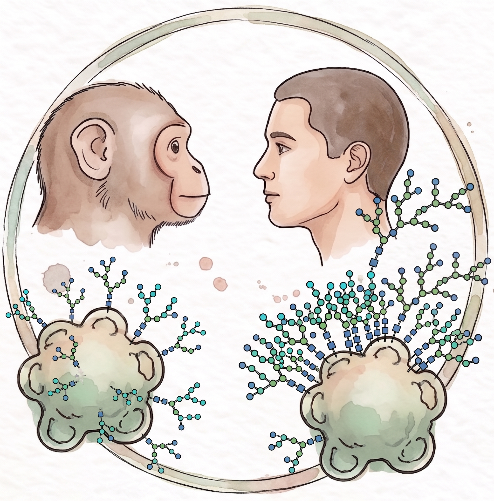

Evolutionary Dynamics of the Neural Glycoproteome
To understand what makes the human brain unique, we must look beyond the genome. We use iPSC-derived neural organoids to map the spatiotemporal dynamics of protein glycosylation during cortical development. By mapping these glycoproteomic profiles across different cell types, developmental stages and evolutionary contexts, we aim to uncover how post-translational modifications have shaped human neurogenesis and driven the evolution of the human brain.